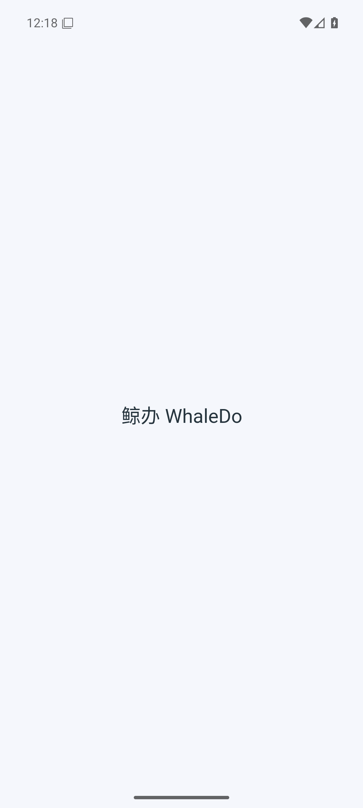
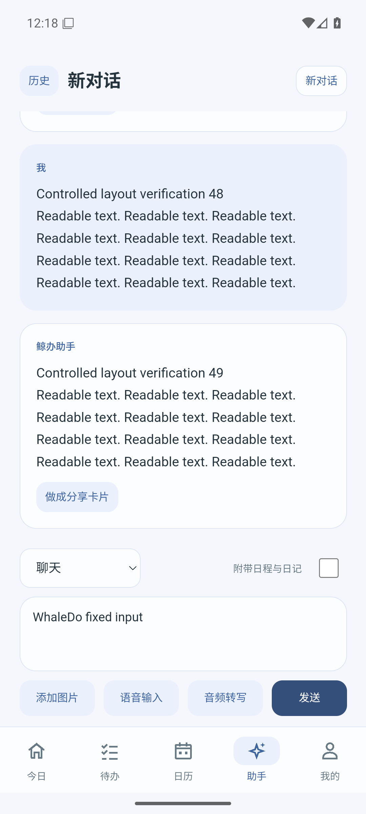

先记下，再整理。
一句话收进待办，再补上用时、日期与重要度。今日、清单与日历，把计划放在看得见的地方。
WELL DO. WILL DO.
记下灵感，整理日常，给重要的事留出时间。
鲸办陪你把每一天，过得从容一点。
Android · HarmonyOS · 独立移动应用课程版
一句话收进待办，再补上用时、日期与重要度。今日、清单与日历，把计划放在看得见的地方。
用文字、图片或音频整理想法。助手可以提出事项与日程建议，预览并同意后才会应用。
把记录做成分享卡片，搭配可编辑的配文。分享到系统应用，或在「鲸日分享」看看彼此的日常。
熟悉的简洁，在两端延续。
一致的五个入口、配色与鲸鱼娘主题。外观可以按你的习惯，选择深浅、色调与圆方。
本机记录按账户隔离；云端备份与同步，由你选择内容和时机。


开始你的一天。
Android 8.0 及以上 · 已签名 APK
下载 Android 安装包下载后在手机上打开，按系统提示允许安装。由鲸办独立发布证书签名，支持现有课程测试包覆盖升级。
HarmonyOS 6.1.1 / API 24 · 调试 HAP
下载 HarmonyOS 调试包未签名，普通真机不可直接安装。用于 DevEco Studio 模拟器调试；真机需使用自己的证书与设备 Profile 签名，日历批量读取还需相应 ACL。
查看鸿蒙安装说明 ↗此版本用于移动应用开发课程。已记录的设备与检查结果见 Release。真人语音完整听写、部分相机路径及后台提醒仍有验证或平台权限限制，不作为已完成能力承诺。
编辑本机记录不会自动上传。备份、覆盖或兼容同步需手动选择范围并确认；鲸日分享只发布你确认的卡片与配文。使用 AI 时，输入内容会发送至课程 API 与模型服务。